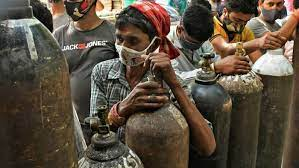

As India is in dire need of medical oxygen and anti-viral drugs, a number of European Union (EU) member states will offer their assistance to India to help tackle the unexpected pandemic resurgence, the European Commission said. "Alarmed by the epidemiological situation in India. We are ready to support," said European Commission President Ursula von der Leyen on Sunday.
The Biden Administration also said it is working non-stop to do all it can to deliver on an urgent basis the supplies most needed by India, the US State Department said here.
South African Health Minister Zweli Mkhize also said that the current COVID-19 crisis of huge number of daily infections in India is something that has already happened elsewhere in the world such as in UK and Europe.
Author: Abdul Ahad

Oxygen Crisis in India
Bed Shortage in Hospital:
As hospitals in Delhi and many other cities run out of beds, people have been forced to find ways to get treatment for sick patients at home. Many have turned to the black market, where prices of essential medicines, oxygen cylinders and concentrators have skyrocketed and questionable drugs are now proliferating.
India’s economic outlook has weakened again, albeit slightly, with worst-case scenario forecasts suggesting the toll from the coronavirus pandemic could be much deeper, stoking fears the job crisis may worsen over the coming year, a Reuters poll found.
Renewed restrictions to curb the current coronavirus wave have stalled economic activity, leaving many millions out of work and pushing economists - who have broadly been bullish - to downgrade their views for the second time since early April
Author: Abdul Ahad
Bed Shortage in India
Economic Crisis in India due to Covid-19:
India’s economic outlook has weakened again, albeit slightly, with worst-case scenario forecasts suggesting the toll from the coronavirus pandemic could be much deeper, stoking fears the job crisis may worsen over the coming year, a Reuters poll found.
Renewed restrictions to curb the current coronavirus wave have stalled economic activity, leaving many millions out of work and pushing economists - who have broadly been bullish - to downgrade their views for the second time since early April
.jpg)
.jpg)